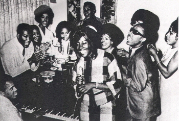

Rhythm and Blues has known a popularity increase since its creation in the early 1940s, so well that it is nowadays one of the major musical genre. Represented today by artists such as Beyonce, Rihanna and Usher, it is worth noting that its characteristics have greatly evolved over the years, at a point that it became necessary to decompose it into subgenres.
From Louis Jordan to Bruno Mars, we aim at exploring this large cultural heritage both musically and historically, one subgenre at a time.
Jump Blues, premise of Rhythm and Blues
The Jump Blues, born in early 1940’s, is a bridge between blues and big band jazz. It is composed with an uptempo blues and usually a vocalist in front of a large, horn-driven orchestra. Note that the latter orchestra is sometimes replaced by a medium sized combo with multiple horns.
Additionally, Jump Blues can be characterized by a driving rhythm, intensely shouted vocals and honking tenor saxophone solos. Those characteristics greatly influenced Rhythm and Blues and Rock and Roll, which is one of the reasons why Jump Blues is said to be a premise of Rhythm and Blues.
Interestingly enough, the purpose of the intense energy generated by vocals and saxophone was actually to keep the attention of dance hall patrons in the crowded rooms, because they were the ones to decide whether to produce the band again. Moreover, that energy compensated the reduced size of bands at that time, reduced due to the belt-tightening of the World War II period.
The major hits in this genre were listed in the Billboard chart’s “Race Records” category, named after the fact that the music was made by black people.
Among the artists having hit the Billboard and having contributed to the style golden periode (40s-50s), one can name Louis Jordan and his Tympany Five band, Big Joe Turner and Roy Brown. If we consider the most representative songs, on the other hand, we discover "Shake, Rattle, And Roll" by Big Joe Turner, “Hand Clappin'” by Red Prysock and “Rockin' At Midnight” by Roy Brown for instance.
As R&B slowed down and got funkier in the early Sixties, jump blues faded from existence. However, a renewal occurs in the 90s with the ‘90s Swing Revival’ scene known as neo-swing.
Early Rhythm and Blues, where it all started
In 1949, the billboard changed the name of the ‘Race Records’ chart to ‘Rhythm & Blues Records’ and categorized it as music of African American Origin destined to a black audience.
The songs and artists that hit the top at that time are nowadays classified in the Early R&B musical genre.
Musically, Early R&B is really close to Jump Blues as it keeps its tempo and its drive. On the other hand, its instrumentation is sparer and the emphasis is on the song, not on improvisation.
The early development of R&B occurred in tandem with the second migration of African Americans who moved from the Southern and rural regions of the United States during and after World War II.
That resulted in an increase of African-American populations in cities like Los Angeles, Chicago and New York.
Early R&B period started in early 50s and ended in early 60s. Several artists hit the top in that genre, and were celebrated as its major ambassadors.
We can name Ruth Brown also known as “The queen of R&B” and her song “Teardrops from My Eyes” which made the Atlantic Record success with its first million-selling record.
One can also think of Fats Domino in 1950 with his greatest hit “Blueberry hill”, a mix between Rhythm and blues and early Rock n roll’ that would later join Grammy Hall of Fame.
Last but not least, Johnny Otis, nicknamed “the godfather of Rhythm and Blues”, one of the most successful white in the world of black music and whose song “Double Crossing Blues” is a representative title in early R&B music.
In late 1950s some changes occured in R&B.
Artists began to include electric instruments in their songs, the first to make the step being Ike Turner in 1954 with his song “Cubano Jump”.
The African-American music affiliated with civil rights activism, the best example of this turn is probably Sam Cooke's “A change is gonna come” song, one of the most important songs of the civil rights era. Another remarkable song in this direction is “Keep on Pushing” by The Impressions,named by Dr. King as the Movement’s unofficial anthem.
Finally, a branch of R&B evolves in what we call ‘Soul’ today. Note that the songs affiliated to the civil rights activism mentioned above are actually classified as soul songs.
If he can preach it, we can sing it ! - Dr. King
The early R&B will later be quoted as Urban oldies especially by radios like 98.7 Kiss FM that was broadcasting urban oldies music on a regular basis in the 90s.
New Orleans Rhythm and Blues, a South flavor
In early 50s to mid 50s, a new style emerged in New Orleans. A Rhythm and Blues including New Orleans sound: rollicking pianos, complex rhythms, and, much of the time, a certain melancholy tone.
The complex rhythms were in part due to the second line, which was named after the second line of marchers at New Orleans mardi gras parades and jazz funerals.
Professor Longhair (from his real name Henry Roeland Byrd) was an early initiator of this particular genre, his song “Go to the Mardi Gras” represents it well by including an easily recognizable second line rhythm. Another New Orleans R&B was released by Shirley & Lee (from their names Shirley Goodman and Leonard Lee) in 1952, their song named “I’m Gone” contained the special melancholy tone that now characterise the movement.
Motown, the story of a successful label defining its own R&B
Motown is a record label born in 1959 in Detroit, that will symbolise the irresistible success-story of African-American music in the sixties. Indeed, seven year after its creation, in 1966, it employed 450 persons and had a gross income of $20 million.
Motown music fingerprint was that their records contained the same core session musicians, which stabilized their musical style. The musicians gave sound's basic rhythmic foundation of bouncing bass and echoing drums. Their arrangements were frequently lush and elaborate, adding strings, horns, woodwinds, piano, extra percussion, or whatever else might enhance the music's urbane stylishness.
Those innovations, put together with the label musical stability, had people to think of motown as a musical genre rather than as a label.

Kim Weston (with microphone) and Other Early Motown Entertainers, 1963
The adventure began with Barrett Strong releasing the first Motown hit “Money (That's What I Want)” in August 1959.
Motown further signed many up and coming artists including Marvin Gaye, The Temptations and Stevie Wonder.
The Supremes, led by Diana Ross, was the most successful Motown group, and has been actually the most successful female singing group in the history of the recording industry. One of its biggest hits in 1964 was “Baby Love“, leading the path to a R&B closer to Pop music , opposite to Early R&B which was closer to what we categorize as Rock n’ Roll.
Diana Ross’ song represents well Motown music by mixing soul and pop classics.
The style evolved over the years, Motown recorded the Jackson 5 and “I Want You Back” in 1969 with a more funky bubblegum-soul that began to break away from established Motown formulas.
The story of Motown records ended in 1988 when the label was sold to MCA for $61 million dollars. However, note that the artists continued to record under Motown label.
British R&B, the Rhythm and Blues from across Atlantic
The Rhythm and Blues movement from the 50s in the United States highly influenced the British youth. In early 60s the mod (term derived from ‘modernist’) subculture was born, consisting in fashion style-conscious, motor scooters passion and also music including a new genre, British R&B.
Famous British R&B albums from the 60s
British RnB was Influenced by both Jump Blues and British Blues songs, we can cite “Hoochie Coochie” from ‘Blues Incorporated’ for example. Led by Alexis Korner, the band released “R&B from the Marquee”, an album not so successful commercially but that would inspire the future R&B British bands.
Among those young new bands, there are The Who and their debut album that include explosive songs like the very well known “My Generation“ under the slogan ‘Maximum R&B’. The song is a pure product of mod subculture and boasts clear influences of American rhythm and blues, most explicitly in the call and response form of the verses.
The Beatles was another band influenced by R&B, for example with their cover of “You Really Got a Hold on Me” recorded in their early career in 1963. This song is a cover of The Miracles song “You've Really Got a Hold on Me” written by Smokey Robinson released on Motown's Tamla label (Motown label used outside US) that shows British R&B inspiration from US R&B artist.
Beyond of the R&B signature, we also note the early signature of what would be called the “british invasion”.
British R&B, highly correlated with British early Rock n’ Roll, was the strange mix between British youngsters suit in tailor-made suits and African-American originated Rhythm and Blues music.
It is interesting to note that the latter music was brought to the UK by African American servicemen stationed in Britain during the Cold War.
Blue-eyed soul, the white colored R&B
The term 'blue-eyed soul' was coined by Georgie Woods, a black disc jockey on the WDAS radio station in Philadelphia. Woods invented the term to categorise the
“Righteous Brothers”, whose records were played on R&B radio stations before black disc jockeys and programme directors realised they were actually white people.
You should have seen Rocky G's face drop when he found out they weren't really Negroes.- WWRL's general manager about his most acute black disc jockey
Back in 1960s, R&B movement split and produced a branch characterized by slower rhythmics, getting away from early R&B and promoting strong voice. The term “blue-eyed soul” has been used to describe R&B with white skinned vocalists, influenced by the latter music branch.
We cannot talk about blue eyed soul without mentioning the “Righteous Brothers” and their emotionally charged vocals like in “You've Lost That Lovin' Feelin'” song.
The latter is notably the most-played song on American radio and television in the 20th century as the organization Broadcast Music ranked it.
There was also Timi Yuro, “The little girl with the big voice” that a lot of listeners would easily trust as black skinned with her million-selling debut single "Hurt" released in 1961.
The blue eyed soul further includes songs from the famous artist David Bowie in the 70s and its “Young Americans” title, representative of the genre.
Finally, by the Eighties, black entertainment got dominated by disco, a racially homogenous music reflecting the tastes of an audience which had, perhaps, consigned real soul — black or white — to the unfashionable pages of history.
Contemporary R&B, the revival of R&B
After the demise of disco in the 80s, R&B renewed with success. Contemporary R&B is a mix between many elements of hip-hop, soul, R&B and funk.
Its new musical fingerprint lies in the use of drums machine-backed rhythms like the 808 (stands for Roland TR-808) and a polished record production style.
Note that the 808, created in 1980, has been used on more hit records than any other drum machine.
The pioneer in the genre is the album “Off the Wall” by Michael Jackson, which opened the new area of R&B from the first song “Don't Stop 'Til You Get Enough” to the end. The album is characterized by a dazzling array of disco beats, funk guitars, clean mainstream pop and unashamed -therefore affecting- schmaltz* that is utterly thrilling in its utter joy.
The Mariah Carey debut single “Vision of Love” also brought a significant novelty in Contemporary R&B by the use of melisma (singing of a single syllable of text while moving between several different notes in succession).
The Rolling Stones magazine said from the song that “the fluttering strings of notes that decorate songs like ‘Vision of Love’ inspired the entire American Idol vocal school, for better or worse, and virtually every other female R&B singer since the nineties.”
Finally, we can also appreciate the first grammy awarded album in the newly created section “Best R&B Album” (1984). “II” by “Boyz II Men” (produced under Motown label) is again a highly vocal album with for example the massive commercially successful track “I'll Make Love to You”.
We note that, in the 90s, contemporary R&B made a step in direction of hip-hop both musically and in the public image. The Boyz II Men, for instance, started touring with MC Hammer (highly successful rapper) during “Too Legit to Quit” tour in 1992, and featured with LL Cool J for the song “Hey Lover”.
Contemporary R&B is still today an highly listened-to genre in music, its ambassadors are for instance Drake, Rihanna and Alicia Keys.
The shift that Rhythm and Blues took with contemporary has been criticized by some music actors, for example George Nelson, music editor to Billboard, describes the development of retail outlets for R&B records in a book named 'The Death of Rhythm and Blues'.
New Jack Swing, a punchy version of Contemporary R&B
New Jack Swing (a.k.a Swingbeat) really goes further than Contemporary R&B in direction of Hip-Hop. The result is a music style in middle of both genres that includes hip-hop rhythms, samples and production techniques with sung chorus and melodic qualities of soul.
The name "New Jack" was a slang term meaning “the one who is new to something and lacks experience and style in it”.
We cannot talk about New Jack Swing without mentioning the acknowledged "King of New Jack Swing” Teddy Riley, a producer/songwriter from Harlem New York and also member of the “Guy” trio.
He was the one to coin the “New Jack Swing” term in 1987 : "I define the term as a new kid on the block who's swingin' it," and later "In most people's definition it's music that puts the ingredients of gospel, rap, R&B and pop-jazz together, with a little funk here and there if you want to add it."
I define the term as a new kid on the block who's swingin' it- Teddy Riley, inventor of New Jack Swing
In 1988, the young Teddy Ridley (only twenty years old then) and his R&B group “Guy” record their first eponym album.It is considered as a classic in New Jack Swing, especially thanks to his first track “Groove Me”.
Another early New Jack Swing album was Janet Jackson “Control” album, including the song “Nasty” which is a concentrate of energy. The overall album is qualified by Richard J. Ripani (author of The New Blue Music: Changes in Rhythm & Blues, 1950–1999) as ‘one of the most influential albums in the history of rhythm and blues and the first album to bridge the gap between R&B and rap music.’
The most successful New Jack Swing album finally comes in 1991 with Michael Jackson again and his 8th studio album “Dangerous” with the majority of songs produced by Teddy Ridley, the New Jack Swing pioneer. Among its celebrated titles, “Remember the Time” is a dance-oriented, new jack swing-flavored title awarded as Best R&B/Soul Single at 1993 Soul Train Music Awards.
We can highlight a recent title “Finesse (remix)” by Bruno Mars featuring Cardi B.that really feels like a throwback to the 90s, the golden period of New Jack Swing.
Alternative R&B, the new exploration of R&B
Alternative R&B, also referred to as PBR&B (a play on Pabst Blue Ribbon, the US hipster beer of choice) or alt-R&B is the logical follow up to contemporary R&B.
With its lyrics focused on popping bottles of expensive champagne and partying with beautiful models (see R Kelly’s album from 2012, Black Panties). Fans and artists became bored of the overuse of classic contemporary R&B model.
Consequently, some artists tried to get away this movement and promoted a new music style characterized by a subtle, smooth, and reverberated production, heavy bass and often reverberated vocals. The latter was born from cross influences from Dream Pop, Future Garage, and UK Bass for their reverberated, airy, and bass-heavy sound.
We can often notify thoughtful, dark lyrics that are stepping away from contemporary R&B.
R&B had been pigeonholed by a lot of music fans as this bland, fairly tiresome music form, which wasn’t particularly innovating and was dominated by a few artists that frankly had little left to say- George Ergatoudis, Head of Music at BBC Radio 1 and 1Xtra
Artists like Kelela took part in this newly created genre that synthesizes contemporary R&B and progressive electronic music with an aptitude for prompting club play as much as bedroom listening.
Her title “Rewind” promoted a cloudy atmosphere that proved the dream pop influence over the production.
The full album provided a more interesting lyrical content as the album described the beginning, middle, and end of a relationship in reverse order.
The Weeknd, an artist that really was one of the first PBR&B artist started in 2011 with mixtapes that were featured with MGMT or Radiohead, hence really cross genre and getting away from classic R&B.
The album “Trilogy” combined its 3 first mixtapes, notably songs like “House of Balloons” that synthesize well the early steps of alternative R&B.
Finally we can remark that UK vocalists have a predominance in this movement with alt-R&B ambassadors like Mahalia, IAMDBB (closer to recent Trap movement for IAMDDB) or Jorja Smith.
The title “Blue Lights” from Jorja Smith album “Lost & Found” (2018) really embed the greats vocals that where present in R&B/soul of the 60s.
Some critics have been emitted about this title of “alternative R&B” like FKA Twigs that told to The Guardian “Fuck Alternative R&B”. Her frustration relates the frustration of numerous artists and fans, that R&B, as always, kept its initially explicite and later implicit mean for black music.
Moreover, they denounce that alt-R&B is a genre that tends to include musics that are hardly related by their musicality but more by the skin color of the artists.
Conclusion
As a conclusion, we can cite the very well resume of Rhythm and Blues in its integrality from Mark Puryear for Folklife magazine:
“The history of R&B and the breadth of what it encompasses—socially, commercially, and artistically—suggests that it is not monolithic. It tells a complex story of many strands and experiences. A distinctly African American music drawing from the deep tributaries of African American expressive culture, it is an amalgam of jump blues, big band swing, gospel, boogie, and blues that was initially developed during a thirty-year period that bridges the era of legally sanctioned racial segregation, international conflicts, and the struggle for civil rights.
Its formal qualities, stylistic range, marketing and consumption trends, and worldwide currency today thus reflect not only the changing social and political landscapes of American race relations, but also urban life, culture, and popular entertainment in mainstream America.”